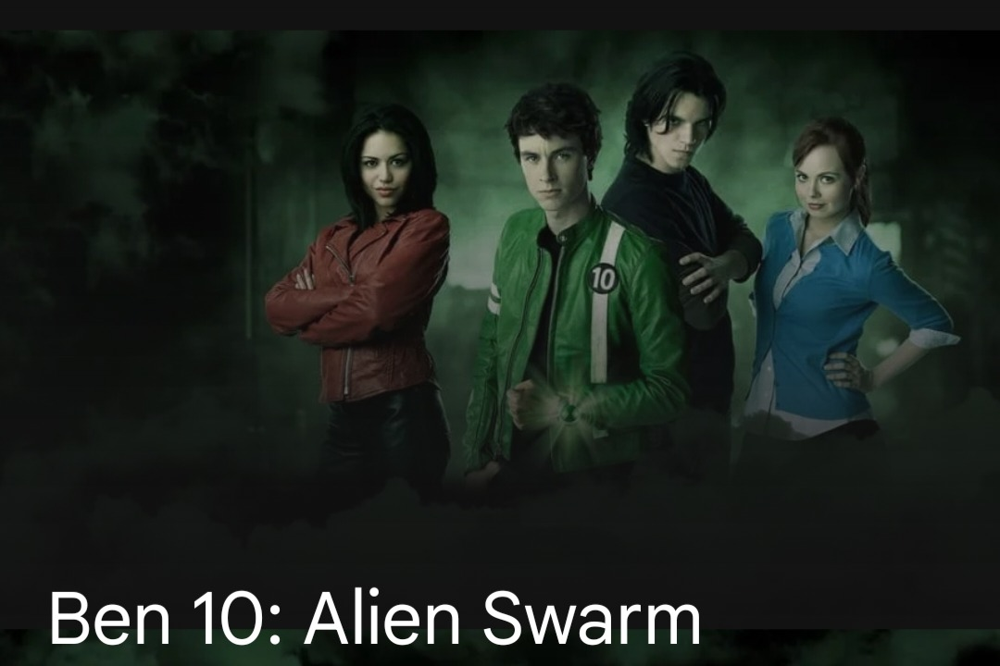

2009 ‧ Family/Sci-fi ‧ 1h 30m
Ben and his friends team up with a daughter of an alleged traitor, despite his grandfather's orders against it, in order to stop an alien force from taking over the world.